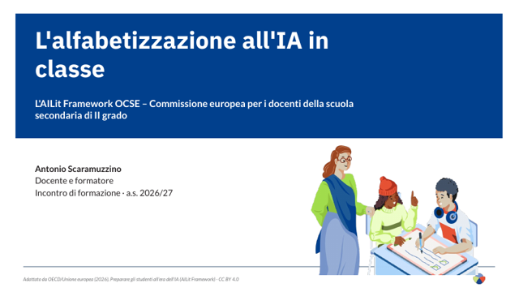

Docenti
L'alfabetizzazione all'IA in classe
Per un incontro di formazione o un collegio docenti (60–90 minuti): perché parlarne a scuola, conoscenze, abilità e attitudini, i quattro ambiti con le 19 competenze, un esempio dei tre livelli e quattro mosse per partire.
18 slide · note per il relatore incluse